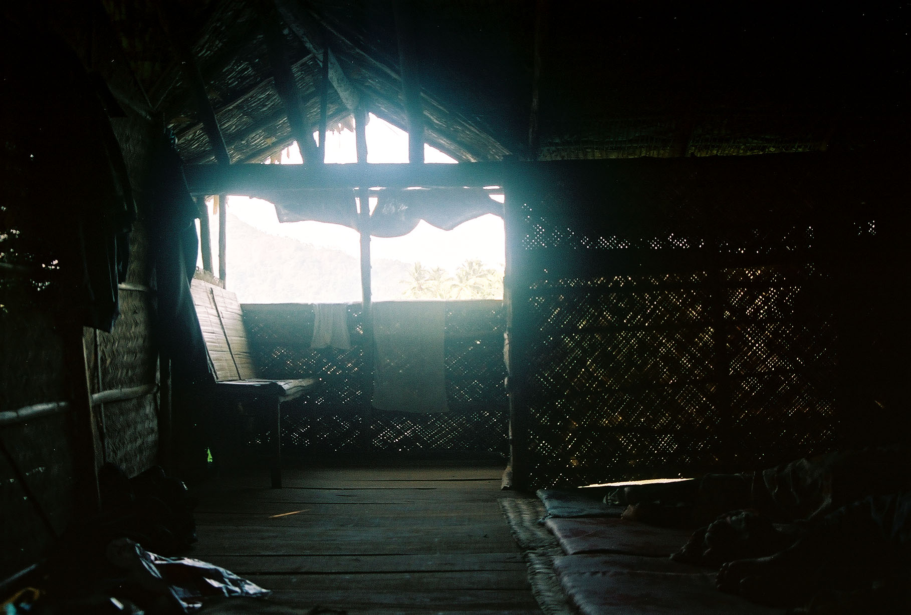

If you are going to survive I would suggest learning more than hiding and hoping, you need to know how to fight, run, and use whatever you have around you to your advantage. You need to learn how to survive as well as hide. Here are some basic and advanced tips that will help with your survival. If you want to learn how to survive good luck if you don't good riddance.
One of the first things that you need to survive is shelter. So when you need to stay away from the zombies without having to worry about getting in go for something about ground. A tree house is something that is well known but under used.
It is good to utilize because it is away from the zombies and it is easy to hide and disguise the tree house. If you are in a heavily wooded area it is possible to a series of tree houses and platforms to make travelling through the woods safer and easier.